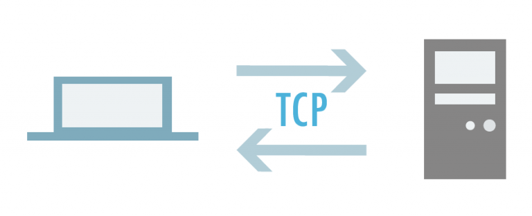

TCP
El protocolo TCP (Protocolo de Control de Transmisión) es uno de los protocolos fundamentales en Internet, nos permite que las aplicaciones puedan comunicarse con garantías independientemente de las capas inferiores del modelo TCP/IP. Esto significa que los routers (capa de red en el modelo TCP/IP) solamente tienen que enviar los segmentos (unidad de medida en TCP), sin preocuparse si van a llegar esos datos correctamente o no. TCP da soporte a múltiples protocolos de la capa de aplicación, como, por ejemplo, HTTP (web), HTTPS (web segura), POP3 (correo entrante) y SMTP (correo saliente) así como sus versiones seguras utilizando TLS. También se utiliza TCP en protocolos tan importantes como FTP, FTPS y SFTP
FUNCIONAMIENTO
- ♦TCP tiene un mecanismo complejo de control de errores
- ♦Los datos llegan en orden, es decir, en el mismo orden que fueron emitidos
- ♦El protocolo TCP permite realizar control de flujo, es decir, es capaz de mitigar la posible saturación de la red o del host remoto
- ♦TCP también dispone de control de congestión